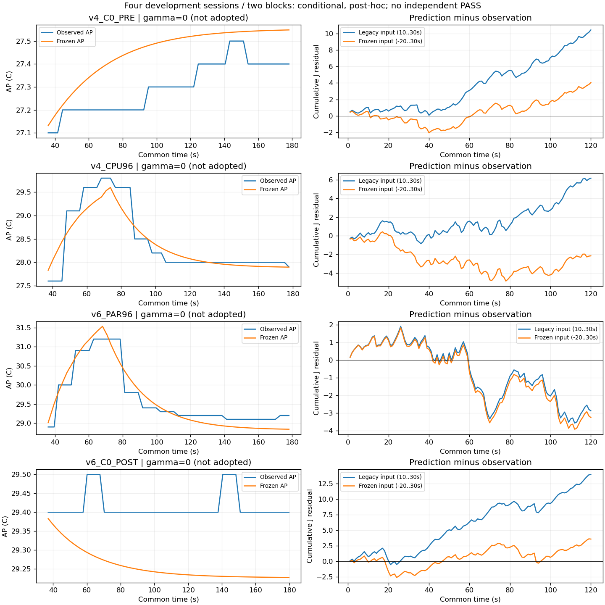

개발 4세션 / 별도 수집 block 2개. 새 독립 확인 0. 기본 모형·strict·experiment_ready=false 유지. 기기 명령 0.
동결 모형의 −20~30초 전력 입력을 복원했습니다. 원본과 기존 10~30초 결과는 보존합니다. AP 초기화·계수는 그대로이며 gamma≥0 최적값은 0입니다.
| 세션 | 관측 120초 J | 기존 J 오차 | 수정 J 오차 | AP MAE °C |
|---|---|---|---|---|
| v4_C0_PRE | 132.338 | +10.455 | +4.041 | 0.152 |
| v4_CPU96 | 165.025 | +6.168 | -2.162 | 0.203 |
| v6_PAR96 | 153.440 | -2.877 | -3.252 | 0.225 |
| v6_C0_POST | 129.789 | +13.951 | +3.585 | 0.157 |
세션 제외 평균 MAE: 0.184408 → 0.199300°C. block 제외: 0.184408 → 0.203042°C. gamma의 세션별 방향이 일관되지 않아 배경 전력을 AP 오차의 단일 원인으로 채택할 근거가 없습니다.

AP는 common 35초~각 냉각 종료(관측점), J는 common 0~120초. 실제 lane 일정 조건부 계산이며 온라인 정책 우월성 검증이 아닙니다. 전류 raw=mA 가정, 절대 에너지 정확도 미인증. CPU 활동은 기술적 동시성 관측이며 GPU·무선 전력 귀속이 아닙니다.